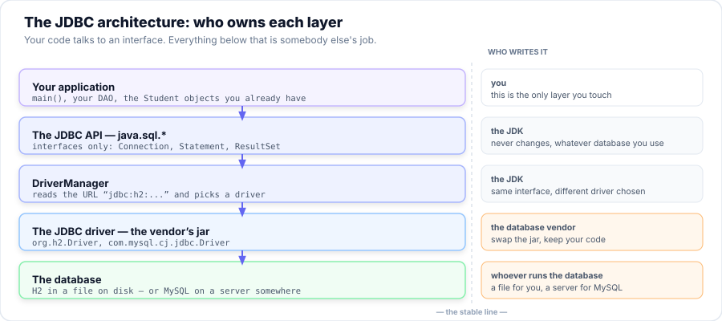

Guide — H2 & MySQL: the two databases
The course uses two databases, on purpose. H2 is embedded: one jar, one file, no server, no network — which is why every program in Session 7 runs on your machine with nothing installed. MySQL is the real thing: a server that many people connect to over a network. This guide shows you how to set up, connect to and use both — and, more importantly, shows you that the Java you write for them is the same Java.
- Explain why a course that works offline uses an embedded database — and when you would reach for a server instead.
- Add a JDBC driver jar to a project, by hand on the classpath and as a Maven dependency.
- Write an H2 URL for a file database, an in-memory database, and a server, and say what each one keeps and when it disappears.
- Open the H2 Console and browse a database you created from Java.
- Create a MySQL database and a MySQL user, and grant that user only what it needs.
- Connect to MySQL from Java, including the three URL parameters that local development almost always needs.
- Move a program from one database to the other by changing exactly three things — the jar, the driver class and the URL.
- Translate the handful of SQL statements that differ between the two dialects.
- Diagnose the six connection errors you are most likely to meet, from the message alone.
Your Roadmap for Today
Why two databases?
A database is just a program that stores rows and answers questions about them. There are two ways to get one. You can run a server, and have every application on the network talk to it over TCP — that is MySQL. Or you can build the database into your own program, so it is a library you link against and a file on your own disk — that is H2.
| H2 — embedded | MySQL — server | |
|---|---|---|
| How it runs | A jar inside your program | A separate program, listening on a port |
| Where the data lives | A file you can copy, like any file | Inside the server's own storage, on another machine or in a volume |
| Who connects | Your program, and nobody else | Many programs, many users, many machines |
| Setting it up | Drop a jar on the classpath — nothing else | Install a server, create a database, create a user, grant rights |
| Works offline | Yes — this is why the course uses it | No — it needs the server to be up and reachable |
| Two programs at once | Awkward — the file is locked (see Part A 8) | Normal — that is what a server is for |
| Realistic for | Tests, demos, desktop tools, learning, prototypes | Anything with users: the capstone, a real deployment |
The JDBC contract: only three things change
In Session 7 you met the architecture: your code talks to java.sql.*, and a driver does the
talking to the database. The driver is the only vendor-specific part, and it is chosen at runtime by the
URL you hand to DriverManager. That gives you a hard promise:
A program written against JDBC runs against any database, and switching databases touches three things and nothing else: the jar on the classpath, the driver class, and the URL.
| H2 | MySQL | |
|---|---|---|
| 1. The jar | h2-2.3.232.jar | mysql-connector-j-*.jar |
| 2. The driver class | org.h2.Driver | com.mysql.cj.jdbc.Driver |
| 3. The URL | jdbc:h2:./data/registry | jdbc:mysql://localhost:3306/registry |
| User / password | sa / empty | the user you create in Part B |
Class.forName("org.h2.Driver")
is no longer needed — and it compiles just fine without it. You will still see it in older books and
in the odd application server with a strange class loader. Write it if you like; it is not doing any
harm. Just do not believe the book that says it is required.
Part A of 5 H2 — the embedded database
H2 is a database engine written entirely in Java, about 2.6 MB, that you carry inside your own program. There is no daemon to start, no port to open, and no administrator to ask. You connect to it the same way you connect to anything else — with a URL — and the URL simply happens to be a file path.

A 1 — Getting the jar
Three ways, in order of preference for this course:
Maven (IntelliJ users — the easy one). Add this to your pom.xml and let the IDE fetch it:
<dependency>
<groupId>com.h2database</groupId>
<artifactId>h2</artifactId>
<version>2.3.232</version>
</dependency>A plain download (no Maven). One file from Maven Central — save it into a
lib/ folder in your project:
https://repo1.maven.org/maven2/com/h2database/h2/2.3.232/h2-2.3.232.jarAlready in the course. The Session 7 project ships it:
code/s07-jdbc-api/lib/h2-2.3.232.jarA 2 — Putting it on the classpath
The jar has to be visible to both javac (to compile your imports) and
java (to run them). The separator differs by operating system — this is
the mistake that eats an hour.
# Windows - the separator is a semicolon ;
javac -cp "lib/h2-2.3.232.jar" -d out src/App.java
java -cp "lib/h2-2.3.232.jar;out" App
# macOS / Linux - the separator is a colon :
javac -cp "lib/h2-2.3.232.jar" -d out src/App.java
java -cp "lib/h2-2.3.232.jar:out" App-cp by hand inside an IDE.
A 3 — The H2 URL, in all its forms
The URL is the whole configuration. These are the forms you will actually use:
| URL | What it gives you |
|---|---|
jdbc:h2:./data/registry | A file database. Keeps everything, in data/registry.mv.db, relative to where you run the program. This is what the course uses. |
jdbc:h2:~/registry | The same, in your home folder. Handy when you do not want to think about the working directory. |
jdbc:h2:mem:test | In memory. Nothing on disk, created empty every run — perfect for tests. Dropped the moment the last connection closes (see the gotcha below). |
jdbc:h2:mem:test;DB_CLOSE_DELAY=-1 | In memory, but it survives until the JVM exits. Add this whenever a test connects twice. |
jdbc:h2:./data/registry;AUTO_SERVER=TRUE | A file database that a second program may also open. The usual fix for the file-lock error. |
jdbc:h2:tcp://localhost:9092/./data/registry | Reach a database that another process is serving over the network — H2 behaving like MySQL. |
jdbc:h2:./data/registry;MODE=MySQL | A file database that accepts MySQL's dialect. Useful for Part E, but do not rely on it forever. |
A 4 — Where the files go, and what they are
The database is not one file, and it is not a folder. It is:
registry.mv.db— the database. Back it up by copying it. That is the whole backup strategy.registry.trace.db— a log H2 writes only when something went wrong. If you see one, your last run logged an error; read it.registry.lock.db— appears while the database is open by a running program. Its presence when nothing is running is the cause of the "may be already in use" error in the troubleshooting table.
Create the folder before you connect. H2 writes the file, but do not rely on it
creating a missing data/ directory for you — one mkdir saves a confusing
error.
jdbc:h2:mem:test is dropped when the last connection to it closes. Write
your table and close the connection — then open a second connection to check it — and the
table is gone. It is not a bug and it is not flaky; it is the definition of "in memory". Either hold one
connection open for the life of the test, or append ;DB_CLOSE_DELAY=-1.
A 5 — The user
A brand-new H2 database has one user, sa (system administrator), with an
empty password. That is not a security hole you have to fix — there is no network
and no other user; the file's own permissions are the real security. But pass the user explicitly rather
than relying on the default, so the same program works when you switch to a database that has a real
user:
// H2
Connection c = DriverManager.getConnection("jdbc:h2:./data/registry", "sa", "");A 6 — The H2 Console: look at your database without writing code
H2 ships a small web browser for your data. Run this from the folder holding the jar, and open
http://localhost:8082:
java -cp lib/h2-2.3.232.jar org.h2.tools.Server -web
In the Connect screen, the fields are the same three things your Java code uses: Driver
Class org.h2.Driver, JDBC URL
jdbc:h2:./data/registry, User sa, password blank. You can then
run SELECT * FROM students; and see the rows your program inserted, in a table, with a
mouse.
;AUTO_SERVER=TRUE and let both share it.
A 7 — A first table, and the SQL H2 accepts
CREATE TABLE IF NOT EXISTS students (
id INT GENERATED BY DEFAULT AS IDENTITY PRIMARY KEY,
name VARCHAR(100) NOT NULL,
email VARCHAR(150) UNIQUE,
mark DECIMAL(5,2),
active BOOLEAN DEFAULT TRUE,
joined TIMESTAMP DEFAULT CURRENT_TIMESTAMP
);
INSERT INTO students (name, email, mark) VALUES ('Ada Lovelace', 'ada@example.com', 88.50);
SELECT id, name, mark FROM students WHERE mark >= 70 ORDER BY mark DESC;
GENERATED BY DEFAULT AS IDENTITY is the standard spelling and H2 also accepts the friendlier
AUTO_INCREMENT. Remember that one — it is the first row of the dialect table in Part D.
A 8 — The H2 gotchas, collected
- The file is locked to one process. Two programs, or a program and the console, cannot both open a file database. Fix:
AUTO_SERVER=TRUE, or open one at a time. - Relative paths depend on the working directory.
./data/registrymeans "next to wherever the JVM was started", which is not always your project folder in an IDE. When a database seems to have vanished, look for a straydata/folder. - In-memory databases die with the last connection. See the warning in A 4.
- H2 2.x is strict. Older H2 ignored some bad SQL that the current version rejects. If a two-year-old tutorial's
CREATE TABLEfails, it is usually the older dialect, not you. - Delete the
.mv.dbfile to start clean. There is noDROP DATABASEyou need; deleting the file is deleting the database.
Part B of 5 MySQL — the server database
MySQL is what most of the working Java world means by "the database". It is a program in its own right, usually on its own machine, listening on a network port. It speaks the same JDBC as H2 — but you are no longer the only thing talking to it, and that changes the setup.
B 1 — Installing MySQL
Pick whichever of these you have; the Java code afterwards is identical.
- Docker (fastest to try, easiest to throw away). One command, and MySQL is running:
docker run --name registry-mysql \
-e MYSQL_ROOT_PASSWORD=rootpw \
-e MYSQL_DATABASE=registry \
-e MYSQL_USER=registry \
-e MYSQL_PASSWORD=ChangeMe_2026 \
-p 3306:3306 -d mysql:8.4- MySQL Community Edition (the normal install). Download the installer from
dev.mysql.com/downloads/, choose the Developer Default setup, and set a root password you will remember. On Windows it can register itself as a service that starts with the machine. - Already have MariaDB? It is protocol-compatible with MySQL; Connector/J talks to it. Use it — the dialect notes in Part D apply almost unchanged.
B 2 — The port
MySQL listens on 3306 by default. You will see that number in every URL. If the server
and your program are on the same machine, the host is localhost.
B 3 — Prove the server is up, and know your version
Before you write one line of Java, connect as root and ask the server what it is. This one
command tells you three things at once: the server is running, you can reach it, and which version is
answering — which is the number every later question depends on.
# Command line (the password prompt appears after you press Enter)
mysql -u root -p -e "SELECT VERSION();"
# If your MySQL runs in Docker, the client lives inside the container
docker exec registry-mysql mysql -uroot -prootpw -e "SELECT VERSION();"
# Expected: 8.4.11 (any 8.x, or 8.4+, is what this guide describes)command not found means the MySQL client is not on your PATH — not that the
server is down. Can't connect to MySQL server means the server itself is not running.
Access denied means you typed the wrong root password. Do not skip to Part C until one
of those three is resolved; every later error will be a symptom of this one.
B 4 — Create the database, and a user for it
Open the MySQL command line (or Workbench) as root and run this. Note the shape of it: one command creates the database, one creates an ordinary user, one hands that user rights over that database only.
CREATE DATABASE IF NOT EXISTS registry
CHARACTER SET utf8mb4 COLLATE utf8mb4_unicode_ci;
CREATE USER IF NOT EXISTS 'registry'@'localhost' IDENTIFIED BY 'ChangeMe_2026';
CREATE USER IF NOT EXISTS 'registry'@'%' IDENTIFIED BY 'ChangeMe_2026';
GRANT ALL PRIVILEGES ON registry.* TO 'registry'@'localhost';
GRANT ALL PRIVILEGES ON registry.* TO 'registry'@'%';
FLUSH PRIVILEGES;
Why two users with one name? MySQL identifies an account by name and host.
'registry'@'localhost' and 'registry'@'%' are two different accounts, and the
one your program gets depends on where it connects from. From a plain terminal on the same
machine that is localhost; from inside a Docker container, or over the network, it is your
machine's IP and only @'%' matches. Create both and you will not spend an afternoon on it.
(This is the live version of the "name and host" gotcha in B 9.)
root in the application. We made a
user called registry and granted it rights over the registry database and
nothing else. If that password leaks, exactly one database is at risk. This one habit separates a
student project from a deployment. utf8mb4 is the other one — it is what makes
names with accents, emoji and any non-English text survive the round trip.
B 5 — The jar: Connector/J
MySQL's JDBC driver is called Connector/J. Maven coordinates:
<dependency>
<groupId>com.mysql</groupId>
<artifactId>mysql-connector-j</artifactId>
<version>9.1.0</version> <!-- or any current 8.1+ / 9.x release -->
</dependency>
Or download the mysql-connector-j-*.jar from dev.mysql.com/downloads/connector/j/
and put it in lib/ exactly as you did with H2. The classpath rules, the separators and the
IntelliJ steps are unchanged.
B 6 — The MySQL URL, and the three parameters you will want
jdbc:mysql://localhost:3306/registry?sslMode=DISABLED&allowPublicKeyRetrieval=true&serverTimezone=UTCIn a Java string the & is written literally (no escaping needed — the escaping above is for HTML). Read the URL as three parts:
| Part | Meaning |
|---|---|
jdbc:mysql://localhost:3306/registry | The protocol, the host, the port, and the database name. Unlike H2, MySQL has databases inside a server, so the name is part of the URL. |
sslMode=DISABLED | Do not require TLS. Reasonable for localhost; the old spelling was useSSL=false. Never disable TLS for a database you reach over a network you do not control. |
allowPublicKeyRetrieval=true | Permit the client to fetch the server's public key to encrypt the password. Without it, a modern MySQL over a plaintext connection refuses the first (cold) login — see B 7. |
serverTimezone=UTC | Tell the driver what time zone the timestamps are in. The alternative is a The server time zone value ... is unrecognized error on some installs. |
B 7 — Why the password needs a public key at all
MySQL 8 replaced the old mysql_native_password plugin with
caching_sha2_password as the default. It is stronger — passwords are
salted and hashed properly — but it has a consequence that surprises people: over a connection with
no TLS, the client cannot safely send the password, so it asks the server for its RSA public key and
encrypts the password with it. A client that has not been told the key is trustworthy will refuse.
The error is not permanent, and that is the part that confuses people. The server remembers a correctly-authenticated session in its cache. So the message below appears on the first connection to an account since the server started — a "cold" connection — and after that the same account on the same URL connects fine without the parameter. Run it on a fresh server, or after an account's password is changed, and it comes back. The fix is not "try again"; it is to set the URL correctly once:
java.sql.SQLException: Public Key Retrieval is not allowedTwo sane answers, in order of preference:
- Add
allowPublicKeyRetrieval=true(local development — what you will do today). It accepts the key the server offers. Fine when "the server" is your own laptop. - Use TLS, i.e. remove
sslMode=DISABLED, and the key is verified through the certificate instead. This is what production does.
You will also meet the older fix, ALTER USER ... IDENTIFIED WITH mysql_native_password BY ...,
which downgrades the account back to the old plugin. It works, and it is exactly the thing you should not
teach yourself as the normal answer.
B 8 — The same table, the MySQL way
CREATE TABLE IF NOT EXISTS students (
id INT AUTO_INCREMENT PRIMARY KEY,
name VARCHAR(100) NOT NULL,
email VARCHAR(150) UNIQUE,
mark DECIMAL(5,2),
active TINYINT(1) DEFAULT 1,
joined DATETIME DEFAULT CURRENT_TIMESTAMP
) ENGINE=InnoDB DEFAULT CHARSET=utf8mb4;Compare it with the H2 version in A 7 and you have already read most of Part D. Two lines changed:
GENERATED BY DEFAULT AS IDENTITYbecameAUTO_INCREMENT.BOOLEANbecameTINYINT(1)— MySQL has no real boolean (see Part D).- And a line was added:
ENGINE=InnoDB DEFAULT CHARSET=utf8mb4.
B 9 — The MySQL gotchas, collected
- The server has to be running. A stopped MySQL is a
Communications link failure, not a "database not found". - Users are identified by name and host.
'registry'@'localhost'and'registry'@'%'are two different users. If a login works from one machine and not another, this is why. - Rights are per-database, and are cached. A
GRANTis not always visible to an existing connection;FLUSH PRIVILEGES;(or a fresh connection) settles it. - Identifier quoting is backticks. Double quotes mean "string literal" in MySQL by default. If you move H2 SQL that quotes a column with
", MySQL will not understand it. ||is OR, not concatenation. The single most common silent wrong answer when SQL moves from a standard database to MySQL.- Transactions are real, and InnoDB is why.
COMMITandROLLBACKbehave the way Session 8 describes. On H2 they do too, but the stakes are lower.
Part C of 5 One program, two databases
Here is the whole argument of this guide in one class. It knows nothing about H2 or MySQL. It is handed a URL, a user and a password, and it works.
Db inserts into students, so the table must already be there. Run the
CREATE TABLE from A 7 against H2 and the one from B 8 against MySQL
first. This is the classic first error from someone who jumped straight to Part C:
Table "STUDENTS" not found (this database is empty) on H2, or
Table 'registry.students' doesn't exist on MySQL. Neither means your code is wrong —
it means the database is empty.
import java.sql.*;
public class Db {
// The ONLY things that differ between the two databases.
// H2: jdbc:h2:./data/registry , "sa" , ""
// MySQL: jdbc:mysql://localhost:3306/registry?sslMode=DISABLED&allowPublicKeyRetrieval=true&serverTimezone=UTC , "registry" , "ChangeMe_2026"
private final String url, user, password;
public Db(String url, String user, String password) {
this.url = url; this.user = user; this.password = password;
}
/** Hand back one row for a name, or null. Note the ? - never string-concatenate input. */
public String findEmail(String name) throws SQLException {
String sql = "SELECT email FROM students WHERE name = ?";
try (Connection c = DriverManager.getConnection(url, user, password);
PreparedStatement ps = c.prepareStatement(sql)) {
ps.setString(1, name);
try (ResultSet rs = ps.executeQuery()) {
return rs.next() ? rs.getString("email") : null;
}
}
}
public int addStudent(String name, String email, double mark) throws SQLException {
String sql = "INSERT INTO students (name, email, mark) VALUES (?, ?, ?)";
try (Connection c = DriverManager.getConnection(url, user, password);
PreparedStatement ps = c.prepareStatement(sql)) {
ps.setString(1, name);
ps.setString(2, email);
ps.setDouble(3, mark);
return ps.executeUpdate(); // 1 if a row went in
}
}
}Now the two main methods. Look how little is in them:
// Run against the embedded database - nothing installed, works offline
new Db("jdbc:h2:./data/registry", "sa", "").addStudent("Ada Lovelace", "ada@example.com", 88.5);
// Run against the server - same class, same methods, different URL
new Db("jdbc:mysql://localhost:3306/registry?sslMode=DISABLED&allowPublicKeyRetrieval=true&serverTimezone=UTC",
"registry", "ChangeMe_2026").addStudent("Ada Lovelace", "ada@example.com", 88.5);Db.java did not change by one character. That is not a coincidence or a nice property
— it is the design goal of the entire API, and it is why the course does not have a chapter on
"H2 programming" and another on "MySQL programming". Learn JDBC once; point it wherever you like.
Part D of 5 The SQL that differs
JDBC hides how you talk. It cannot hide what you say: every database has its own dialect, and a few statements are not portable. Here is the whole list you are likely to meet. If you stick to the left-hand column you will write SQL that runs on both.
| You want | Portable / H2 | MySQL |
|---|---|---|
| Auto-numbering key | INT GENERATED BY DEFAULT AS IDENTITY(H2 also accepts AUTO_INCREMENT) | INT AUTO_INCREMENT |
| True / false | BOOLEAN — a real type | TINYINT(1) — no real boolean; TRUE/FALSE are just 1 and 0 |
| Short text | VARCHAR(100) | VARCHAR(100) — always give the length |
| Long text | CLOB | TEXT / LONGTEXT |
| Money, exact decimals | DECIMAL(9,2) | DECIMAL(9,2) — identical. Never use DOUBLE for money. |
| Date and time | TIMESTAMP | DATETIME (or TIMESTAMP, which has quirks) |
| First n rows | LIMIT 10 | LIMIT 10 — same |
| Join two strings | first || ' ' || last | CONCAT(first, ' ', last)⚠️ || means OR in MySQL — it will not throw, it will quietly mislead |
| Quote a name with a space | "full name" | `full name` — backticks |
| Upsert | MERGE INTO t KEY(id) VALUES (…) | INSERT … ON DUPLICATE KEY UPDATE … |
| Drop everything you made | DROP ALL OBJECTS | DROP DATABASE registry; then recreate it |
| “If the table exists” | CREATE TABLE IF NOT EXISTS … | CREATE TABLE IF NOT EXISTS … — same |
||. On H2 and PostgreSQL it joins strings. On MySQL, unless the server's sql_mode includes PIPES_AS_CONCAT, it is the OR operator — so 'a' || 'b' evaluates to 1 and is accepted without complaint. Use CONCAT() and it works everywhere.
TINYINT(1). MySQL has no boolean type. active = TRUE works because TRUE is an alias for 1, and it round-trips as a Java boolean through JDBC — but reading it as an int in a query somewhere else is where the confusion starts.
And when you genuinely cannot avoid the difference, there is an escape hatch: H2 will run in MySQL's dialect if you ask it to.
-- H2, accepting MySQL syntax such as ON DUPLICATE KEY UPDATE
jdbc:h2:./data/registry;MODE=MySQLUse it to make a lesson run, not to pretend the dialects are the same. The moment you rely on it, the migration in Part E gets harder, not easier.
Part E of 5 Moving a program from H2 to MySQL
Work top to bottom. Each step is small, and each one tells you immediately whether it worked.
SELECT VERSION();. If that fails, nothing later can work — fix it here.
root.
pom.xml. Leave the H2 jar there too — you are not deleting anything yet.
schema.sql, applying the Part D translations (AUTO_INCREMENT, TINYINT(1), DATETIME).
||, double-quoted identifiers and upserts in your SQL. These are the three that fail late or lie quietly. Search your source for || right now.
sa. Put the URL, user and password in one config object or a properties file rather than in three places, so the next switch is one edit.
🔧 When it will not connect
Almost every JDBC failure is one of these six. Find your message in the first column and the fix is in the second. Read the message before you change anything — it names the problem far more often than people expect.
| The message | What it really means, and the fix |
|---|---|
No suitable driver found for jdbc:h2:… |
The jar is not on the classpath of the JVM that is running. It compiled, so javac had it — check the java command too. Watch the separator: ; on Windows, : elsewhere. |
Database may be already in use |
An H2 file database is open somewhere else — another run of your program, or the H2 Console. Close the other one, or connect with ;AUTO_SERVER=TRUE. |
Access denied for user 'registry'@'localhost' |
Either the password is wrong, or the user does not exist for that host, or it has no rights on that database. Re-run the GRANT in B 4 and check the host part of the name. |
Communications link failure |
The server is not running, or nothing is listening on 3306, or a firewall is in the way. It is a network error, not a credentials error — start the server and try again. |
Public Key Retrieval is not allowed |
MySQL 8's caching_sha2_password over a plaintext connection — on the first (cold) login only, so it can also appear on a fresh server and then vanish on a retry. Add allowPublicKeyRetrieval=true, or turn TLS back on. See B 7. |
The server time zone value … is unrecognized |
The driver cannot work out the server's zone. Add serverTimezone=UTC to the URL. See B 6. |
Unknown database 'registry' |
The server is fine and the login worked — the database name in the URL does not exist. Run the CREATE DATABASE in B 4. (On H2 this cannot happen: the URL creates it.) |
Access denied for user 'registry'@'%' to database 'nosuchdb' |
The same mistake as the row above, but seen by a least-privileged user. A user with rights on one database gets "Access denied … to database" instead of "Unknown database", because MySQL checks privileges before it confirms the database exists. Do not go hunting for a broken password — check the database name in the URL first. |
ALL PRIVILEGES ON *.*. Both work, both are what a rushed developer does at
11 p.m., and both are the start of the next incident. Fix the cause: the right jar, the right URL,
the narrowest grant that does the job.
📋 Cheat Sheet — H2 and MySQL in one screen
The three things that change
H2 MySQL
jar h2-2.3.232.jar mysql-connector-j-*.jar
driver class org.h2.Driver com.mysql.cj.jdbc.Driver
URL jdbc:h2:./data/registry jdbc:mysql://localhost:3306/registryThe URLs worth knowing
# H2 - a file, offline, survives restarts
jdbc:h2:./data/registry
# H2 - in memory, wiped when the last connection closes
jdbc:h2:mem:test
jdbc:h2:mem:test;DB_CLOSE_DELAY=-1 # ...keep it until the JVM exits
# H2 - let a second program open it too (fixes "already in use")
jdbc:h2:./data/registry;AUTO_SERVER=TRUE
# MySQL - the three parameters local development needs
jdbc:mysql://localhost:3306/registry?sslMode=DISABLED&allowPublicKeyRetrieval=true&serverTimezone=UTCClasspath, and the separator that trips you
javac -cp "lib/h2-2.3.232.jar" -d out src/App.java
java -cp "lib/h2-2.3.232.jar;out" App # Windows : semicolon
java -cp "lib/h2-2.3.232.jar:out" App # mac/Linux: colonThe two tools
# H2 Console - browse your file database in a browser, port 8082
java -cp lib/h2-2.3.232.jar org.h2.tools.Server -web
# MySQL - prove the server is up and learn its version, BEFORE writing Java
mysql -u root -p -e "SELECT VERSION();"
docker exec registry-mysql mysql -uroot -prootpw -e "SELECT VERSION();" # if in Docker
# MySQL - the client as root, then as your own user
mysql -u root -p
mysql -u registry -p registryThe jars, by exact filename
# H2 - 2.6 MB, download from Maven Central
lib/h2-2.3.232.jar
# MySQL Connector/J - 2.5 MB, download from dev.mysql.com/downloads/connector/j/
lib/mysql-connector-j-9.1.0.jar
# put BOTH on the classpath (Windows separator ';')
java -cp "lib/h2-2.3.232.jar;lib/mysql-connector-j-9.1.0.jar;out" AppThe SQL differences that bite
-- auto key
id INT GENERATED BY DEFAULT AS IDENTITY -- H2 / standard
id INT AUTO_INCREMENT -- MySQL
-- boolean
active BOOLEAN -- H2, a real type
active TINYINT(1) -- MySQL, 1 or 0
-- join strings: this is the dangerous one
first || ' ' || last -- H2 joins them
CONCAT(first, ' ', last) -- MySQL way (|| means OR!)The mental model to keep
// your code talks to java.sql.* and never to a vendor.
// DriverManager reads the URL and picks the driver.
// change the jar, the driver and the URL -> everything above is untouched.
Connection c = DriverManager.getConnection(url, user, password); // the one call that differs🎓 Summary
- Embedded or server is a choice about who else connects, not about quality. H2 is one jar and one file; MySQL is a process on a port.
- The course runs on H2 so that it runs anywhere. No install, no network, no administrator — every Session 7 program works on the first day, offline.
- Only three things change between databases: the jar, the driver class, and the URL. Your Java stays put.
- The driver registers itself. Since JDBC 4 you do not need
Class.forName; a jar on the classpath is enough — but bothjavacandjavaneed that classpath. - An H2 URL is a file path.
jdbc:h2:mem:is memory that dies with the last connection;jdbc:h2:./data/registryis a file that lives on. - A file database is locked to one process at a time. That is why the H2 Console and your program cannot both hold it — unless you set
AUTO_SERVER=TRUE. - Never connect an application as root, and never grant more than one database. The narrowest grant that does the job is the right one.
- MySQL 8 changed the password rules.
caching_sha2_passwordis why you needallowPublicKeyRetrieval=true(locally) or TLS (properly). - JDBC hides how you talk; it cannot hide what you say.
||,AUTO_INCREMENTandTINYINT(1)are dialect, and one of them fails silently. - Keep both connections alive. The embedded one is your fast, offline test loop; the server is what you deploy. Being able to run the same code against either is the point of the whole API.
- Embedded database
- A database engine that runs inside your program, as a library, with no separate server process. H2 is one.
- JDBC URL
- The string that names a database and tells
DriverManagerwhich driver to use. Thejdbc:prefix, then a vendor protocol. - Driver (JDBC driver)
- The vendor's jar that translates
java.sql.*calls into a specific database's language. - Classpath
- The list of places the JVM looks for classes and jars. Your driver must be on it to run, and on it again to compile.
- Connector/J
- MySQL's official JDBC driver. Driver class
com.mysql.cj.jdbc.Driver. - Port
- The number a network service listens on. MySQL's default is 3306; H2's server and console use 9092 and 8082.
- In-memory database
- A database that exists only in RAM and vanishes when the last connection closes. Fast, and deliberately temporary.
- File lock
- A marker H2 places while a file database is open, preventing a second process from writing it. The cause of "may be already in use".
- GRANT
- MySQL's way of giving a user rights, always scoped to particular objects.
GRANT ALL ON registry.*is scoped to one database. - caching_sha2_password
- MySQL 8's default authentication plugin. Stronger than the old one, and the reason for the public-key message.
- SQL dialect
- The specific spelling of SQL that a database accepts. Standard SQL is the common core; the edges differ.
- utf8mb4
- The MySQL character set that stores the full range of Unicode, including emoji. The right default for text.
Read (official & trusted)
- H2 — the official cheat sheet, and the feature list that documents every URL setting on this page.
- H2 — the tutorial, including the Console, from the people who wrote it.
- MySQL Connector/J — the official documentation, whose configuration section is the authority on every URL parameter.
- MySQL 8.4 Reference Manual:
CREATE USER,GRANT, and the language differences in Part D. - Oracle — the JDBC tutorial, especially "Establishing a Connection" and the
DataSourcematerial Session 8 builds on. - Book: Java: The Complete Reference, the JDBC chapter — and read its SQL dialect notes with Part D open beside you.